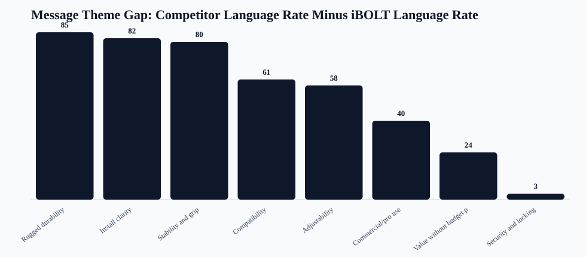
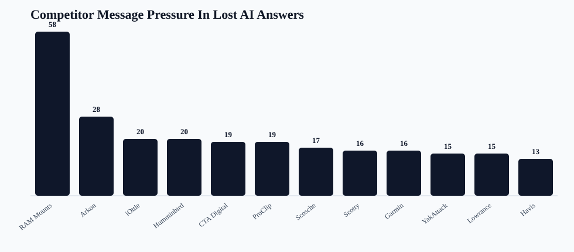

iBOLT AI Message Gap Map
Readout: iBOLT wins when AI sees it as a specialist. Competitors win broad prompts when the answer has clearer commercial, ruggedness, compatibility, security, stability, and install language. The fix is not generic SEO copy. It is answer-first product and proof language that puts iBOLT in the same consideration set.
iBOLT mention rows
22
AI context when iBOLT appears
Lost answer rows
71
AI language when iBOLT is absent
Competitors
24
Brands/defaults compared
Top theme gap
Rugged durability
85 point gap
Query rows
25
Prompt-level language map
Copy actions
8
Reusable edit instructions


Theme Gap Ranking
| Theme | iBOLT rate | Lost-answer rate | Gap | Top competitors | Affected categories | Page copy action |
|---|---|---|---|---|---|---|
| Rugged durability | 14% | 99% | 85 | RAM Mounts 57; Arkon 24; iOttie 15; CTA Digital 14; Humminbird 12; ProClip 12 | restaurant 16; delivery 15; fishing 15; fleet 14; warehouse 7; tablet 3 | Add material, vibration, heat, moisture, or jobsite stress proof before the first product recommendation. |
| Install clarity | 18% | 100% | 82 | RAM Mounts 58; Arkon 25; iOttie 15; CTA Digital 14; Humminbird 12; ProClip 12 | restaurant 17; delivery 15; fishing 15; fleet 14; warehouse 7; tablet 3 | Add a simple mounting-method selector that compares clamp, drill base, suction, magnetic, wall, and console installs. |
| Stability and grip | 9% | 89% | 80 | RAM Mounts 56; Arkon 25; iOttie 15; CTA Digital 12; ProClip 12; Scosche 9 | delivery 15; restaurant 15; fleet 14; fishing 9; warehouse 7; tablet 3 | Answer how the mount stays stable during stops, vibration, rough water, forklift movement, or shared-vehicle use. |
| Compatibility | 32% | 93% | 61 | RAM Mounts 54; Arkon 22; iOttie 14; CTA Digital 13; Humminbird 11; ProClip 10 | restaurant 17; delivery 15; fishing 14; fleet 12; warehouse 7; tablet 1 | Add compatibility tables for device size, mounting pattern, vehicle/equipment type, AMPS pattern, and ball size. |
| Adjustability | 5% | 63% | 58 | RAM Mounts 37; Arkon 17; CTA Digital 12; Humminbird 7; Scotty 7; iOttie 6 | restaurant 15; fishing 10; delivery 6; fleet 6; warehouse 5; tablet 3 | Explain how modular arms, ball sizes, plates, and holders can be combined or changed as the operation changes. |
| Commercial/pro use | 59% | 99% | 40 | RAM Mounts 57; Arkon 25; CTA Digital 14; iOttie 14; Humminbird 12; ProClip 12 | restaurant 17; fishing 15; delivery 14; fleet 14; warehouse 7; tablet 3 | Add a short commercial-use block that names the work setting, the device being mounted, and why iBOLT is purpose-built for that workflow. |
| Value without budget positioning | 59% | 83% | 24 | RAM Mounts 51; Arkon 17; Humminbird 11; iOttie 11; ProClip 11; CTA Digital 9 | fishing 14; restaurant 13; fleet 12; delivery 11; warehouse 7; tablet 2 | Answer value intent without calling iBOLT cheap. Focus on getting the right kit, reducing wrong-part purchases, reuse, warranty, and quick shipping. |
| Security and locking | 77% | 80% | 3 | RAM Mounts 50; Arkon 21; iOttie 15; CTA Digital 14; ProClip 10; Scosche 9 | restaurant 15; delivery 14; fleet 13; fishing 8; warehouse 5; tablet 2 | Add theft, shared-vehicle, customer-facing, restaurant counter, or fleet-control language where locking matters. |
Competitor Language Pressure
| Brand | Pressure | Lost rows | Co-mentions | Categories | Dominant language | Counter-positioning |
|---|---|---|---|---|---|---|
| RAM Mounts | 58 | 58 | 13 | delivery 14; fleet 14; fishing 10; restaurant 10; warehouse 7; tablet 3 | easy install 58; commercial/pro 57; rugged/durable 57; stability/grip 56; compatibility 54; budget/value 51; secure/locking 50; adjustable/flexible 37 | Position iBOLT as the specialist for exact business workflows, with modular parts that remain cross-compatible with industry-standard balls and AMPS patterns. |
| Arkon | 28 | 25 | 5 | fleet 10; delivery 6; restaurant 6; tablet 2; warehouse 1 | commercial/pro 25; easy install 25; stability/grip 25; rugged/durable 24; compatibility 22; secure/locking 21; adjustable/flexible 17; budget/value 17 | Position iBOLT around commercial durability, locked tablet workflows, restaurant stations, forklift mounts, and fleet-specific fit. |
| iOttie | 20 | 15 | 3 | delivery 9; fleet 5; tablet 1 | easy install 15; rugged/durable 15; secure/locking 15; stability/grip 15; commercial/pro 14; compatibility 14; budget/value 11; adjustable/flexible 6 | Position iBOLT as commercial-grade equipment rather than consumer phone accessories. |
| Humminbird | 20 | 12 | 0 | fishing 12 | commercial/pro 12; easy install 12; rugged/durable 12; budget/value 11; compatibility 11; adjustable/flexible 7; secure/locking 6; stability/grip 6 | Clarify that iBOLT complements fish finders and marine electronics by solving the mounting, vibration, and placement problem. |
| CTA Digital | 19 | 14 | 3 | restaurant 12; tablet 2 | commercial/pro 14; easy install 14; rugged/durable 14; secure/locking 14; compatibility 13; adjustable/flexible 12; stability/grip 12; budget/value 9 | iBOLT should emphasize multi-tablet restaurant operations, delivery app stations, locking holders, and POS mounting flexibility. |
| ProClip | 19 | 12 | 1 | fleet 6; delivery 4; warehouse 2 | commercial/pro 12; easy install 12; rugged/durable 12; stability/grip 12; budget/value 11; compatibility 10; secure/locking 10; adjustable/flexible 6 | Position iBOLT around modular fleet deployment, universal device changes, drill bases, AMPS plates, and rugged shared-vehicle use. |
| Scosche | 17 | 9 | 0 | delivery 5; fleet 4 | compatibility 9; easy install 9; rugged/durable 9; secure/locking 9; stability/grip 9; commercial/pro 8; adjustable/flexible 4; budget/value 4 | Position iBOLT as commercial-grade equipment rather than consumer phone accessories. |
| Scotty | 16 | 8 | 0 | fishing 8 | budget/value 8; commercial/pro 8; compatibility 8; easy install 8; rugged/durable 8; stability/grip 8; adjustable/flexible 7; secure/locking 7 | Clarify that iBOLT complements fish finders and marine electronics by solving the mounting, vibration, and placement problem. |
| Garmin | 16 | 8 | 0 | fishing 8 | commercial/pro 8; easy install 8; rugged/durable 8; budget/value 7; compatibility 7; adjustable/flexible 4; secure/locking 2; stability/grip 2 | Clarify that iBOLT complements fish finders and marine electronics by solving the mounting, vibration, and placement problem. |
| YakAttack | 15 | 7 | 0 | fishing 7 | commercial/pro 7; compatibility 7; easy install 7; rugged/durable 7; secure/locking 7; stability/grip 7; adjustable/flexible 6; budget/value 6 | Clarify that iBOLT complements fish finders and marine electronics by solving the mounting, vibration, and placement problem. |
| Lowrance | 15 | 7 | 0 | fishing 7 | commercial/pro 7; easy install 7; rugged/durable 7; budget/value 6; compatibility 6; adjustable/flexible 5; secure/locking 3; stability/grip 3 | Clarify that iBOLT complements fish finders and marine electronics by solving the mounting, vibration, and placement problem. |
| Havis | 13 | 5 | 0 | warehouse 5 | budget/value 5; commercial/pro 5; compatibility 5; easy install 5; rugged/durable 5; stability/grip 5; adjustable/flexible 4; secure/locking 3 | iBOLT should emphasize warehouse-specific scanner holders, forklift mounting, VESA compatibility, and device access under vibration. |
| Mount-It | 11 | 7 | 4 | restaurant 7 | commercial/pro 7; compatibility 7; easy install 7; rugged/durable 7; secure/locking 7; adjustable/flexible 6; stability/grip 5; budget/value 3 | Position iBOLT around multi-tablet restaurant operations, delivery app stations, locking holders, and modular POS mounting. |
| Zebra | 11 | 3 | 0 | warehouse 3 | budget/value 3; commercial/pro 3; compatibility 3; easy install 3; rugged/durable 3; stability/grip 3; adjustable/flexible 2; secure/locking 1 | iBOLT should emphasize warehouse-specific scanner holders, forklift mounting, VESA compatibility, and device access under vibration. |
| Heckler | 11 | 3 | 0 | restaurant 3 | commercial/pro 3; compatibility 3; easy install 3; rugged/durable 3; secure/locking 3; adjustable/flexible 2; stability/grip 2; budget/value 1 | iBOLT should emphasize multi-tablet restaurant operations, delivery app stations, locking holders, and POS mounting flexibility. |
Highest-Risk Query Language
| Query | Category | Missing providers | Competitors | Dominant language | Recommended angle |
|---|---|---|---|---|---|
| best fish finder | fishing | 3 | Garmin 3; Humminbird 3; Lowrance 2 | budget/value 3; commercial/pro 3; easy install 3; rugged/durable 3; compatibility 2 | Clarify that iBOLT solves the mounting side of fish finder setups and compare placement, AMPS plates, rails, vibration, and Garmin/Humminbird/Lowrance compatibility against Humminbird, Garmin, Lowrance. Clarify that iBOLT solves the mounting side of fish finder setups and compare placement, AMPS plates, rails, vibration, and Garmin/Humminbird/Lowrance compatibility against Humminbird, Garmin. |
| best fish finder in water | fishing | 3 | Garmin 3; Humminbird 3; Lowrance 2; RAM Mounts 1 | budget/value 3; commercial/pro 3; compatibility 3; easy install 3; rugged/durable 3; adjustable/flexible 2 | Clarify that iBOLT solves the mounting side of fish finder setups and compare placement, AMPS plates, rails, vibration, and Garmin/Humminbird/Lowrance compatibility against Humminbird, Garmin, Lowrance. Clarify that iBOLT solves the mounting side of fish finder setups and compare placement, AMPS plates, rails, vibration, and Garmin/Humminbird/Lowrance compatibility against Humminbird, Garmin, RAM Mounts. |
| best fish finder mount for small boat | fishing | 3 | Humminbird 3; RAM Mounts 3; Scotty 3; Lowrance 2; YakAttack 2; Garmin 1 | adjustable/flexible 3; budget/value 3; commercial/pro 3; compatibility 3; easy install 3; rugged/durable 3; secure/locking 3; stability/grip 3 | Clarify that iBOLT solves the mounting side of fish finder setups and compare placement, AMPS plates, rails, vibration, and Garmin/Humminbird/Lowrance compatibility against RAM Mounts, Humminbird, Scotty. Clarify that iBOLT solves the mounting side of fish finder setups and compare placement, AMPS plates, rails, vibration, and Garmin/Humminbird/Lowrance compatibility against RAM Mounts, Humminbird, Garmin. |
| best phone mount for delivery drivers | fleet | 3 | iOttie 3; RAM Mounts 3; Belkin 1; LISEN 1; ProClip 1; Scosche 1 | budget/value 3; commercial/pro 3; easy install 3; rugged/durable 3; secure/locking 3; stability/grip 3; compatibility 2; adjustable/flexible 1 | Separate iBOLT from consumer car mounts like RAM Mounts, iOttie, Scosche by emphasizing commercial retention, shared vehicles, drill bases, AMPS compatibility, and daily driver workflows. Separate iBOLT from consumer car mounts like RAM Mounts, iOttie, ProClip by emphasizing commercial retention, shared vehicles, drill bases, AMPS compatibility, and daily driver workflows. Separate iBOLT from consumer car mounts like RAM Mounts, iOttie by emphasizing commercial retention, shared vehicles, drill bases, AMPS compatibility, and daily driver workflows. |
| best phone mount for Instacart and grocery delivery drivers | delivery | 3 | iOttie 3; RAM Mounts 3; Peak Design 1; Scosche 1 | budget/value 3; commercial/pro 3; compatibility 3; easy install 3; rugged/durable 3; secure/locking 3; stability/grip 3; adjustable/flexible 1 | Separate iBOLT from consumer car mounts like RAM Mounts, iOttie, Scosche by emphasizing commercial retention, shared vehicles, drill bases, AMPS compatibility, and daily driver workflows. Separate iBOLT from consumer car mounts like RAM Mounts, iOttie by emphasizing commercial retention, shared vehicles, drill bases, AMPS compatibility, and daily driver workflows. Separate iBOLT from consumer car mounts like RAM Mounts, iOttie, Peak Design by emphasizing commercial retention, shared vehicles, drill bases, AMPS compatibility, and daily driver workflows. |
| best tablet mount | tablet | 3 | RAM Mounts 3; Arkon 2; CTA Digital 2; Lamicall 2; iOttie 1; Tackform 1 | adjustable/flexible 3; commercial/pro 3; easy install 3; rugged/durable 3; stability/grip 3; budget/value 2; secure/locking 2; compatibility 1 | Put iBOLT beside RAM Mounts, Arkon, Tackform in restaurant tablet and POS comparison sections, then emphasize multi-tablet stations, locking holders, and delivery app workflows. Put iBOLT beside RAM Mounts, Arkon, Lamicall in restaurant tablet and POS comparison sections, then emphasize multi-tablet stations, locking holders, and delivery app workflows. Put iBOLT beside RAM Mounts, iOttie, CTA Digital in restaurant tablet and POS comparison sections, then emphasize multi-tablet stations, locking holders, and delivery app workflows. |
| commercial grade phone mount for delivery drivers | delivery | 3 | RAM Mounts 3; Arkon 2; ProClip 2; iOttie 1; Scosche 1 | commercial/pro 3; compatibility 3; easy install 3; rugged/durable 3; stability/grip 3; adjustable/flexible 2; budget/value 2; secure/locking 2 | Separate iBOLT from consumer car mounts like RAM Mounts, Arkon, iOttie by emphasizing commercial retention, shared vehicles, drill bases, AMPS compatibility, and daily driver workflows. Separate iBOLT from consumer car mounts like RAM Mounts, Arkon, ProClip by emphasizing commercial retention, shared vehicles, drill bases, AMPS compatibility, and daily driver workflows. Separate iBOLT from consumer car mounts like RAM Mounts, ProClip by emphasizing commercial retention, shared vehicles, drill bases, AMPS compatibility, and daily driver workflows. |
| magnetic vs clamp phone mounts for delivery work | delivery | 3 | iOttie 2; RAM Mounts 2; Belkin 1; Quad Lock 1; Scosche 1 | compatibility 3; easy install 3; rugged/durable 3; secure/locking 3; stability/grip 3; adjustable/flexible 2; commercial/pro 2; budget/value 1 | Separate iBOLT from consumer car mounts like RAM Mounts, iOttie, Scosche by emphasizing commercial retention, shared vehicles, drill bases, AMPS compatibility, and daily driver workflows. Separate iBOLT from consumer car mounts like RAM Mounts, iOttie, Belkin by emphasizing commercial retention, shared vehicles, drill bases, AMPS compatibility, and daily driver workflows. Separate iBOLT from consumer car mounts like the default competitors by emphasizing commercial retention, shared vehicles, drill bases, AMPS compatibility, and daily driver workflows. |
| best budget fish finder mount | fishing | 3 | RAM Mounts 3; Scotty 3; YakAttack 2; Humminbird 1 | adjustable/flexible 3; budget/value 3; commercial/pro 3; compatibility 3; easy install 3; rugged/durable 3; stability/grip 3; secure/locking 2 | Clarify that iBOLT solves the mounting side of fish finder setups and compare placement, AMPS plates, rails, vibration, and Garmin/Humminbird/Lowrance compatibility against RAM Mounts, Humminbird, Scotty. Clarify that iBOLT solves the mounting side of fish finder setups and compare placement, AMPS plates, rails, vibration, and Garmin/Humminbird/Lowrance compatibility against RAM Mounts, Scotty. Clarify that iBOLT solves the mounting side of fish finder setups and compare placement, AMPS plates, rails, vibration, and Garmin/Humminbird/Lowrance compatibility against RAM Mounts, Scotty, YakAttack. |
| best ELD mount for trucks | fleet | 3 | Arkon 3; RAM Mounts 3; ProClip 2; Scosche 1 | commercial/pro 3; compatibility 3; easy install 3; rugged/durable 3; secure/locking 3; stability/grip 3; budget/value 2; adjustable/flexible 1 | Separate iBOLT from consumer car mounts like RAM Mounts, Arkon, ProClip by emphasizing commercial retention, shared vehicles, drill bases, AMPS compatibility, and daily driver workflows. Separate iBOLT from consumer car mounts like RAM Mounts, Arkon by emphasizing commercial retention, shared vehicles, drill bases, AMPS compatibility, and daily driver workflows. |
| best kayak fish finder mount | fishing | 3 | RAM Mounts 3; YakAttack 3; Humminbird 2; Scotty 2; Garmin 1; Lowrance 1 | commercial/pro 3; compatibility 3; easy install 3; rugged/durable 3; secure/locking 3; stability/grip 3; adjustable/flexible 2; budget/value 2 | Clarify that iBOLT solves the mounting side of fish finder setups and compare placement, AMPS plates, rails, vibration, and Garmin/Humminbird/Lowrance compatibility against RAM Mounts, Scotty, YakAttack. Clarify that iBOLT solves the mounting side of fish finder setups and compare placement, AMPS plates, rails, vibration, and Garmin/Humminbird/Lowrance compatibility against RAM Mounts, Humminbird, Scotty. Clarify that iBOLT solves the mounting side of fish finder setups and compare placement, AMPS plates, rails, vibration, and Garmin/Humminbird/Lowrance compatibility against RAM Mounts, Humminbird, Garmin. |
| best locking phone mount for shared delivery vehicles | delivery | 3 | Arkon 3; RAM Mounts 3; iOttie 1; ProClip 1; Scosche 1; Tackform 1 | commercial/pro 3; compatibility 3; easy install 3; rugged/durable 3; secure/locking 3; stability/grip 3; budget/value 2 | Separate iBOLT from consumer car mounts like RAM Mounts, Arkon, iOttie by emphasizing commercial retention, shared vehicles, drill bases, AMPS compatibility, and daily driver workflows. Separate iBOLT from consumer car mounts like RAM Mounts, Arkon, ProClip by emphasizing commercial retention, shared vehicles, drill bases, AMPS compatibility, and daily driver workflows. Separate iBOLT from consumer car mounts like RAM Mounts, Arkon by emphasizing commercial retention, shared vehicles, drill bases, AMPS compatibility, and daily driver workflows. |
| best locking tablet stand for food trucks and quick service restaurants | restaurant | 3 | CTA Digital 3; Heckler 1; Kensington 1; Mount-It 1; RAM Mounts 1 | commercial/pro 3; compatibility 3; easy install 3; rugged/durable 3; secure/locking 3; adjustable/flexible 2; budget/value 2; stability/grip 2 | Put iBOLT beside Mount-It, CTA Digital, Kensington in restaurant tablet and POS comparison sections, then emphasize multi-tablet stations, locking holders, and delivery app workflows. Put iBOLT beside CTA Digital, RAM Mounts in restaurant tablet and POS comparison sections, then emphasize multi-tablet stations, locking holders, and delivery app workflows. Put iBOLT beside CTA Digital in restaurant tablet and POS comparison sections, then emphasize multi-tablet stations, locking holders, and delivery app workflows. |
| best multi tablet mount | restaurant | 3 | CTA Digital 3; Mount-It 3; RAM Mounts 2; Arkon 1 | adjustable/flexible 3; commercial/pro 3; compatibility 3; easy install 3; rugged/durable 3; secure/locking 3; stability/grip 3; budget/value 2 | Put iBOLT beside Arkon, Mount-It, CTA Digital in restaurant tablet and POS comparison sections, then emphasize multi-tablet stations, locking holders, and delivery app workflows. Put iBOLT beside Mount-It, CTA Digital, RAM Mounts in restaurant tablet and POS comparison sections, then emphasize multi-tablet stations, locking holders, and delivery app workflows. Put iBOLT beside RAM Mounts, Mount-It, CTA Digital in restaurant tablet and POS comparison sections, then emphasize multi-tablet stations, locking holders, and delivery app workflows. |
| best phone mount for construction vehicles and work trucks | fleet | 3 | RAM Mounts 3; Arkon 2; iOttie 1; ProClip 1; Scosche 1; Tackform 1 | budget/value 3; commercial/pro 3; compatibility 3; easy install 3; rugged/durable 3; secure/locking 3; stability/grip 3; adjustable/flexible 1 | Separate iBOLT from consumer car mounts like RAM Mounts, iOttie, Scosche by emphasizing commercial retention, shared vehicles, drill bases, AMPS compatibility, and daily driver workflows. Separate iBOLT from consumer car mounts like RAM Mounts, Arkon by emphasizing commercial retention, shared vehicles, drill bases, AMPS compatibility, and daily driver workflows. Separate iBOLT from consumer car mounts like RAM Mounts, Arkon, ProClip by emphasizing commercial retention, shared vehicles, drill bases, AMPS compatibility, and daily driver workflows. |
| set up multiple tablets for DoorDash Uber Eats and Grubhub | restaurant | 3 | RAM Mounts 2; Arkon 1 | adjustable/flexible 3; budget/value 3; commercial/pro 3; compatibility 3; easy install 3; stability/grip 3; rugged/durable 2; secure/locking 1 | Put iBOLT beside the default competitors in restaurant tablet and POS comparison sections, then emphasize multi-tablet stations, locking holders, and delivery app workflows. Put iBOLT beside RAM Mounts, Arkon in restaurant tablet and POS comparison sections, then emphasize multi-tablet stations, locking holders, and delivery app workflows. Put iBOLT beside RAM Mounts in restaurant tablet and POS comparison sections, then emphasize multi-tablet stations, locking holders, and delivery app workflows. |
| best barcode scanner mount for forklift | warehouse | 3 | Havis 3; RAM Mounts 3; Zebra 2; Arkon 1; ProClip 1; Square 1 | adjustable/flexible 3; budget/value 3; commercial/pro 3; compatibility 3; easy install 3; rugged/durable 3; stability/grip 3; secure/locking 2 | Compare iBOLT against RAM Mounts, ProClip, Havis for forklift, barcode scanner, Zebra/Honeywell style device handling, vibration, and no-drill or secure warehouse installs. Compare iBOLT against RAM Mounts, Havis, Zebra for forklift, barcode scanner, Zebra/Honeywell style device handling, vibration, and no-drill or secure warehouse installs. Compare iBOLT against RAM Mounts, Arkon, Havis for forklift, barcode scanner, Zebra/Honeywell style device handling, vibration, and no-drill or secure warehouse installs. |
| best heavy duty vehicle phone mount | fleet | 3 | Arkon 3; RAM Mounts 3; iOttie 1; ProClip 1; Scosche 1; Tackform 1 | commercial/pro 3; easy install 3; rugged/durable 3; stability/grip 3; budget/value 2; compatibility 2; secure/locking 2; adjustable/flexible 1 | Separate iBOLT from consumer car mounts like RAM Mounts, Arkon, iOttie by emphasizing commercial retention, shared vehicles, drill bases, AMPS compatibility, and daily driver workflows. Separate iBOLT from consumer car mounts like RAM Mounts, Arkon, ProClip by emphasizing commercial retention, shared vehicles, drill bases, AMPS compatibility, and daily driver workflows. Separate iBOLT from consumer car mounts like RAM Mounts, Arkon by emphasizing commercial retention, shared vehicles, drill bases, AMPS compatibility, and daily driver workflows. |
| best phone mount for Amazon Flex and delivery vans | delivery | 3 | RAM Mounts 3; iOttie 2; Arkon 1; Belkin 1; ProClip 1; Scosche 1 | budget/value 3; commercial/pro 3; compatibility 3; easy install 3; rugged/durable 3; secure/locking 3; stability/grip 3; adjustable/flexible 1 | Separate iBOLT from consumer car mounts like RAM Mounts, iOttie, Scosche by emphasizing commercial retention, shared vehicles, drill bases, AMPS compatibility, and daily driver workflows. Separate iBOLT from consumer car mounts like RAM Mounts, Arkon, iOttie by emphasizing commercial retention, shared vehicles, drill bases, AMPS compatibility, and daily driver workflows. Separate iBOLT from consumer car mounts like RAM Mounts, ProClip by emphasizing commercial retention, shared vehicles, drill bases, AMPS compatibility, and daily driver workflows. |
| best restaurant tablet mount | restaurant | 3 | CTA Digital 3; Mount-It 2; RAM Mounts 2; Arkon 1; Bouncepad 1 | adjustable/flexible 3; commercial/pro 3; compatibility 3; easy install 3; rugged/durable 3; secure/locking 3; budget/value 2; stability/grip 2 | Put iBOLT beside Arkon, Mount-It, CTA Digital in restaurant tablet and POS comparison sections, then emphasize multi-tablet stations, locking holders, and delivery app workflows. Put iBOLT beside Mount-It, Bouncepad, CTA Digital in restaurant tablet and POS comparison sections, then emphasize multi-tablet stations, locking holders, and delivery app workflows. Put iBOLT beside RAM Mounts, CTA Digital in restaurant tablet and POS comparison sections, then emphasize multi-tablet stations, locking holders, and delivery app workflows. |
Copy And Schema Actions
| Priority | Theme | Gap | Page copy | Schema/entity fix | Proof points | Do not say |
|---|---|---|---|---|---|---|
| 1 | Rugged durability | 85 | Add material, vibration, heat, moisture, or jobsite stress proof before the first product recommendation. | Add Product or ItemList-style product modules with material, warranty, and mounting-method fields visible on page. | heavy-gauge steel, aluminum, powder coating, vibration-resistant placement, 2-year warranty | |
| 2 | Install clarity | 82 | Add a simple mounting-method selector that compares clamp, drill base, suction, magnetic, wall, and console installs. | Use HowTo schema only on pages with real setup steps and keep steps visible in the page body. | clamp, drill base, suction, magnetic, wall mount, console mount, no-drill options | |
| 3 | Stability and grip | 80 | Answer how the mount stays stable during stops, vibration, rough water, forklift movement, or shared-vehicle use. | Add FAQ questions that directly answer stability, vibration, clamp, drill-base, suction, and magnetic hold concerns. | drill bases, clamps, locking holders, AMPS plates, ball sizes, rough-road or rough-water setup guidance | |
| 4 | Compatibility | 61 | Add compatibility tables for device size, mounting pattern, vehicle/equipment type, AMPS pattern, and ball size. | Use exact product titles, product handles, image alt text, and visible compatibility fields. | 17mm, 20mm, 25mm/B size, 38mm/C size, 57mm, AMPS, VESA, RAM-compatible components | |
| 5 | Adjustability | 58 | Explain how modular arms, ball sizes, plates, and holders can be combined or changed as the operation changes. | Add internal links to AMPS/modular guide and product modules that show the exact holder, arm, and base relationship. | 300+ modular parts, interchangeable holders, ball mounts, AMPS plates, Mount Configurator | |
| 6 | Commercial/pro use | 40 | Add a short commercial-use block that names the work setting, the device being mounted, and why iBOLT is purpose-built for that workflow. | Use FAQPage or HowTo schema where the page explains business setup, installation, or selection steps. | commercial fleets, restaurants, warehouses, delivery vehicles, 300+ modular parts, business-ready mounting kits | |
| 7 | Value without budget positioning | 24 | Answer value intent without calling iBOLT cheap. Focus on getting the right kit, reducing wrong-part purchases, reuse, warranty, and quick shipping. | Use offer/product data where available, but keep the page copy framed around fit and lifetime usefulness. | right-fit kits, reusable modular parts, ships within 24 business hours, 2-year warranty | Do not call iBOLT budget, cheap, affordable alternative, or cheaper than RAM. |
| 8 | Security and locking | 3 | Add theft, shared-vehicle, customer-facing, restaurant counter, or fleet-control language where locking matters. | Add FAQ and product modules for LockPro, Dock'n Lock, keyed holders, and shared-station use cases. | LockPro, Dock'n Lock, keyed holders, drill-base installs, restaurant counters, shared delivery vehicles |